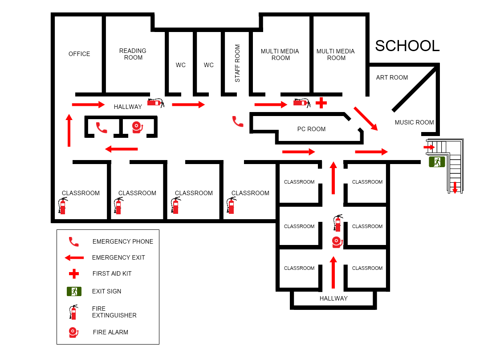

Step 1: Identify Primary Exits
Take time to locate the primary exits in your school or college building.
These are usually the main entrances and exits that are clearly marked and easily accessible.
Step 2:Locate Secondary Exits
In addition to primary exits, familiarize yourself with secondary exits such as stairwells, emergency doors, or alternative routes out of the building.
These exits may be less obvious but can be crucial in emergencies.
Step 3: Pay Attention to Signs and Markings
Look for signs, arrows, and markings indicating the locations of emergency exits throughout the building.
These may include illuminated exit signs, floor plans, or evacuation route maps posted in hallways and classrooms

Step 4: Participate in Safety Drills
Take part in safety drills conducted by your school or college, including fire drills and evacuation drills.
Pay attention to instructions provided by teachers or staff and practice using emergency exits safely and efficiently.
Step 5: Know Your Evacuation Route
Familiarize yourself with the designated evacuation route for your specific location within the building.
Determine the quickest and safest way to reach the nearest exit from your classroom, lab, or other areas you frequent.
Step 6: Be Prepared to Act Quickly
In the event of an emergency, remain calm and act quickly to evacuate the building using the nearest available exit.
Do not delay or wait for confirmation from others if you believe there is a threat to your safety
Step 7: Help Others if Possible
If it is safe to do so, assist others who may need help evacuating, such as classmates with mobility issues or younger students.
Follow the guidance of teachers, staff, or emergency responders to ensure everyone evacuates safely.
Step 8: Stay Low in Smoke
If you encounter smoke during evacuation, stay low to the ground where the air is cleaner and crawl if necessary to reach the nearest exit.
Cover your nose and mouth with a cloth to minimize inhalation of smoke or fumes.
Step 9: Designate Meeting Points
Once outside the building, move to a designated assembly point or meeting area where attendance can be taken and further instructions provided.
Do not re-enter the building until it has been declared safe to do so by authorities.
Step 10: Report Concerns or Hazards
If you notice blocked exits, broken emergency lights, or other safety hazards, report them to school authorities or building management immediately so that corrective action can be taken.